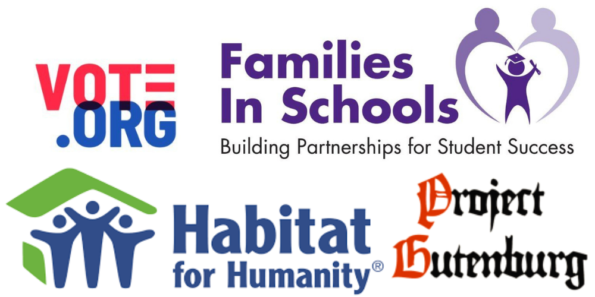

My mom started her very own online shop this April and I have been helping her promote it as her social media manager ever since, using Pinterest, Facebook, and TikTok to market her products. Check out her online shop here!
I've done a variety of volunteer projects, including transcribing documents for nonprofits, and volunteering with voter outreach groups during the 2020 election season. Click here to find volunteer opportunities near you!